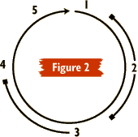

|
Plot Strategiesby Kimberly Appelcline Plot is the element of stories that people are often most aware of. We stay up until 2 a.m. to finish a novel because we can’t wait to see what happens to characters we have come to care about. Who will live and who will die? Who will behave heroically, and who will prove themselves cowards? Which secrets will be revealed, and how? Will the characters overcome their personal limitations to triumph in their quests, or fail tragically as a result of their own foolish choices? Even if a story doesn’t have the most exciting characters or setting, if the plot is strong, most people will be riveted. So what is this miracle ingredient that an audience pays such attention to? As discussed in the first article in this series, The Elements of Good Storytelling, plot is dependent on all of the other elements — setting, character, backstory, details — but it is also a distinct element which we can study separately. In that article, I described plot as a three-step process, composed of set-up, build-up, and pay-off (which could also be called situation, complication, and resolution). The article also discussed three points to bear in mind while creating plots: 1) Keep things moving, 2) Make sure that your characters’ actions have significant potential consequences, and 3) Keep the plot coherent. While these points inform and underlie this article, here I focus on strategies for structuring plot. What Is Plot? Many describe plot as the skeleton that holds a story together. Just as a skeleton connects the body’s knee-bone to its ankle-bone, connects them both to the more distant wrist-bone, and keeps them all part of one functioning, coherent organism, so also plot keeps the murder at the end of a story linked to a conversation in the first scene, and keeps them both logically linked to the precious statue that was stolen somewhere in the story’s middle, and even links everything to the flashback about the protagonist’s childhood events. A good, well-structured plot connects the various events in a story into a coherent whole, flowing smoothly and logically, no matter how surprising the characters’ behavior. If we look at the bare outlines of plot, we can see a variety of formulae underlying the stories’ events. Many films, for example, use the three-part "boy meets girl, boy loses girl, boy gets girl" plot structure. Some say, on the other hand, that there are only two real story plots:
And, if you look closely at these two plots, you might even say that they are only two ways of looking at the same plot! Others say that there are nine basic plots; some say thirty-six. But none of this matters as much as bearing in mind this one basic idea:
It isn’t enough to come up with delightful and susprising twists and turns of events. If that’s all you’ve got, at the end your audience will think, "So? What’s the point?" You need to structure your plot such that certain events lead characters to make choices, and those choices lead to other events, which lead to other choices, etc. Your entire plot should be interdependent. To explain what I mean, we’ll start with Aristotle’s view. Aristotle’s Approach to Plot Aristotle wrote the first known analysis of plot, in his Poetics. Though written some 2300 years ago in Ancient Greece, his approach to plot has yet to be surpassed and is still widely studied as the primary authority. Aristotle said that a plot should have an appropriate beginning, middle, and end. This may sound simple and obvious, but it bears closer examination. Beginnings By this, Aristotle did not mean that you should start with a character’s birth, or with the creation of the universe, but that you should find the proper beginning for the specific story you want to tell. You should begin with some interesting moment, some event or decision or information that will be crucial to the story as a whole. For example, Oedipus Rex, which Aristotle uses as his main example, begins near the end of Oedipus’s life, just before he begins his quest to find the man who murdered the previous king. Though this moment is not the beginning of the "story" of Oedipus — which might have begun with his birth, or even his parents’ births — it is the dramatic moment that initiates the plot of the play, which will follow Oedipus’s quest to its tragic conclusion. In another example, the classic film "Casablanca" begins with the police search for the murderer of two Nazi couriers. This search certainly is not the beginning of Ilsa and Rick’s love story, but it is an exciting, dramatic, interesting moment which begins the string of events that will end with two lovers using those Nazi couriers’ "letters of transit" to fly to freedom in America. The appropriate beginning for a story depends on the ending. Sometimes, you might not be certain of the right beginning for your story until you’ve written the entire thing, or at least a full and detailed outline. Just try to stay open-minded, and not feel anchored to the starting place where you began writing. It may not be the right starting place for your audience to begin reading! Middles The middle of your story, of course, needs to get your audience smoothly and believably from the beginning to the end, building the tension along the way. This doesn’t mean that the story must be linear, since many stories are not. In the middle of "Casablanca," we see scenes of Ilsa and Rick’s prior love affair in Paris. Even in the most linear of stories, like Oedipus Rex, characters can uncover information about the past which changes their interpretation of events, changes the choices they make, and therefore changes the path of the plot. Endings Many of the things I wrote about beginnings also apply to endings. The key is to find the appropriate ending for your plot, the true resolution of the events begun in the first scene. Bear in mind that your beginning and ending are completely interdependent. You can’t start with the search for the murderer of the Nazi couriers if their "letters of transit" won’t be important to the ending. And so, when you find either the true beginning or ending of your story — and this is largely an issue of intuition — it will help you figure out the other. Many writers sit down to write a story with an ending in mind. There is nothing wrong with this tactic, as long as you keep your mind open and flexible. You may find, once you begin writing, that your characters develop in directions you hadn’t intended, that they make different choices than you had planned, and that the ending you originally had in mind no longer works. Or, alternatively, you may find that your intended ending still seems right, but you started in the wrong place to get there. Some writers find it helpful to outline their plots in advance, while others prefer to just write and see where the story takes them. You might want to try both strategies, to figure out which works best for you. Aristotle’s Elements of Complex Plots In addition to his theory about beginnings, middles, and endings, Aristotle described a number of elements that he considered crucial to the creation of a complex, fully developed plot:
Four Common Plot Structures There are many different ways to structure a plot while still incorporating the elements recommended by Aristotle. I’ll discuss four of these common plot structures: the "episodic" plot, the "hero’s journey" plot, the "mountain" plot, and the "W" plot. The Episodic Plot (see figure 1) The episodic plot is often used in picaresque novels — common in the 18th century — such as Tom Jones and Moll Flanders, which follow one lively and resourceful character through a series of adventures. If we were to chart the plot’s rises and falls — Aristotle’s "reversals" — we would see something like a horizontal zigzag, as the tension does not generally increase as the story progresses. This is the plot structure that most closely resembles real life, with its endless series of largely unconnected adventures. Though still common in video games, it has fallen out of fashion in fiction writing, due to its usually less intense emotional impact on the audience. The Hero’s Journey (see figure 2) As described by Joseph Campbell in his numerous books, the hero’s journey plot is common in fairy tales, folk tales, and myths. It involves a specific pattern of stages, which might be graphically represented as a circle, since this plot begins with the hero’s departure and ends with his/her return to society:
One example of this plot is the first "Star Wars" film, in which Luke gets the call to adventure when he finds Princess Leia’s recorded plea for help. He resists, but finally does leave with his guide, Ben Kenobi, to travel through unfamiliar lands, learn new things, and have his strength and character tested in various adventures. His supreme ordeal culminates in the explosion of the Death Star, and Luke is then rewarded and reintigrated into society in the final ceremony scene. The Mountain Plot (see figure 3) Common in literary novels and stories, as well as many independent films, the mountain plot consists of a structure of increasingly significant mini-climactic moments, with increasing tension leading to a final climax of the plot. Its name comes from its graphic representation, which resembles the side of a mountain, climbing in jagged peaks to a summit:
An example of this plot structure might be Jane Austen’s Emma, in which an English gentlewoman finds various obstacles (seps 2 and 3) in the way of her matchmaking for a young friend and for herself. She finds herself increasingly at odds with a close family friend, and the tension between them builds greater and greater. Emma gets herself into increasingly unpleasant social situations, and then eventually realizes that she is in love with the man who has been her friendly adversary throughout the plot. They tell each other of their feelings, and marry. The "W" Plot (see figure 4) Common in popular novels, television, and Hollywood films, the "W" plot structure is named for its graphical representation, which resembles the letter "W." In the "W" plot, the protagonist encounters a series of obstacles to achieving their objective:
Mike Meyers’ film "So I Married an Axe Murderer" displays a good example of a "W" plot structure. Charlie meets Harriet, the woman of his dreams, and wants to live happily ever after. But he has intimacy issues, so (in the first reversal) he convinces himself that she is the infamous "Honeymoon Murderer," and he breaks up with her. But then he learns that the true murderer has been arrested, and so he convinces Harriet to give him another chance, and they get married. Unfortunately (in the second reversal), on the wedding night, Charlie finds out that the true murderer was not arrested, and that in fact very strong evidence points to Harriet, his new bride! He spends his wedding night fleeing an axe-wielding maniac on the roof of their hotel. But in the end he survives, and finds his true love, and everyone lives happily ever after. Embedded Plot Structures All four of these plot structures, of course, are open to sub-plots and combining and embedding. For example, any major battle scene includes numerous reversals and mini-climactic moments. So it is with most plots. In most "W" plots, for example, the protagonist encounters more than two barriers, but encounters two primary, significant barriers. Play around with plots. Play with the frequency of events and climactic moments (if climactic moments are rare, your story may be slow; but if climactic moments are too frequent, your audience may feel bombarded and unable to absorb the significance of each individual event). Most good stories achieve a sort of rhythm of tension and climax. Give it a try! Summary Plot is like a skeleton that holds your story together, connecting all of the pieces so that they form one coherent organism. Plot tells not only what happened, but why it happened. Aristotle said that a complex plot should have a proper beginning, middle, and end. He also listed elements of complex plots: reversals, discoveries, complications, catastrophe, and resolution. Four common plot structures which you may want to experiment with in your own writing are: the episodic plot (common in picaresque novels), the hero’s journey plot (common in fairy tales, folk tales, and myths), the mountain plot (common in literary novels and stories, and some independent films), and the "W" plot (common in popular novels, television, and Hollywood films). All of these plot structures, however, are open to combining and embedding. Exercises
ABOUT KIMBERLY APPELCLINE
|